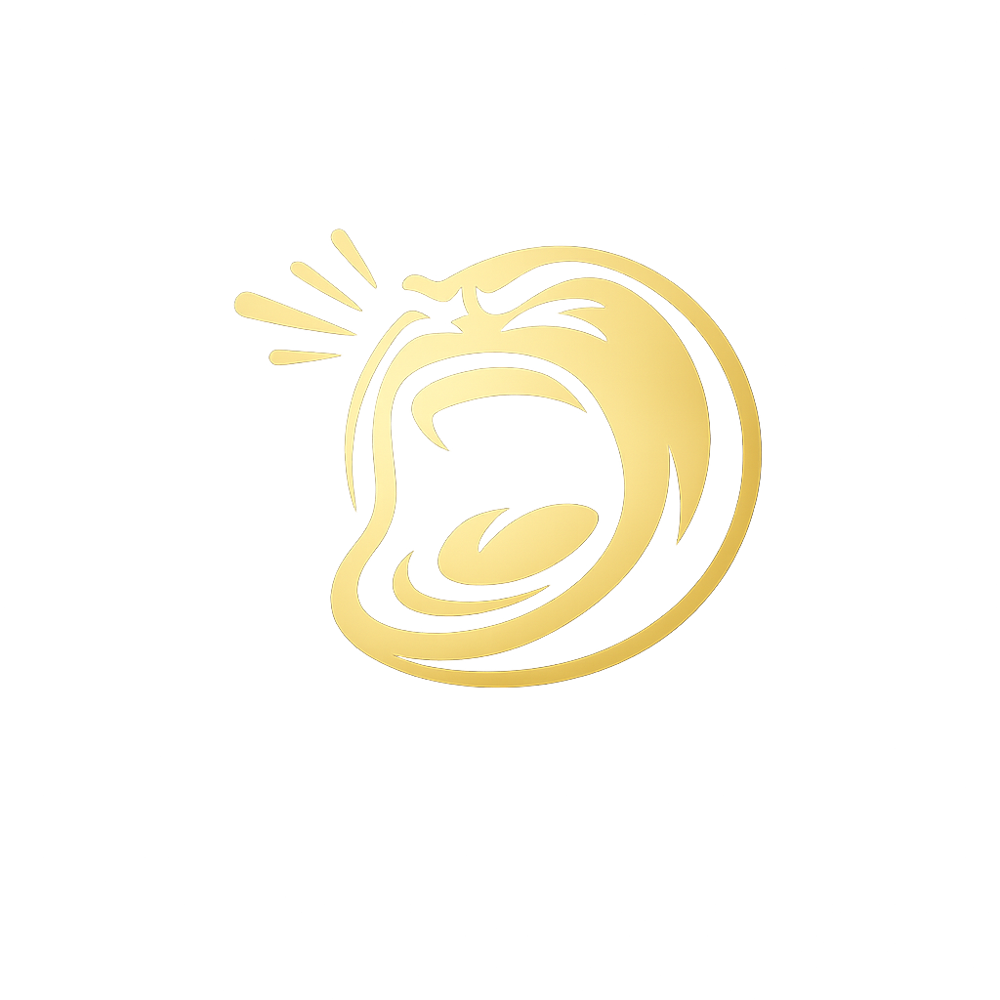

Adaptive ScreamerFireworks: Deploy · Project Possibility
Adaptive, on-device dictation that works for the people mainstream AI leaves behind — open models fine-tuned for dysarthric and accented speech, served locally.
📓 Builder Guide →
The full build, in six steps: task, baseline, method, results, and proof (with charts).
Pitch deck
The 7-slide talk track with the headline results.
Accessibility case study
Dysarthric ASR fine-tune — method, numbers, and how we know it isn't overfitting.
Styling layer flyer
What "AI slop" is, how we score it, and the before/after.